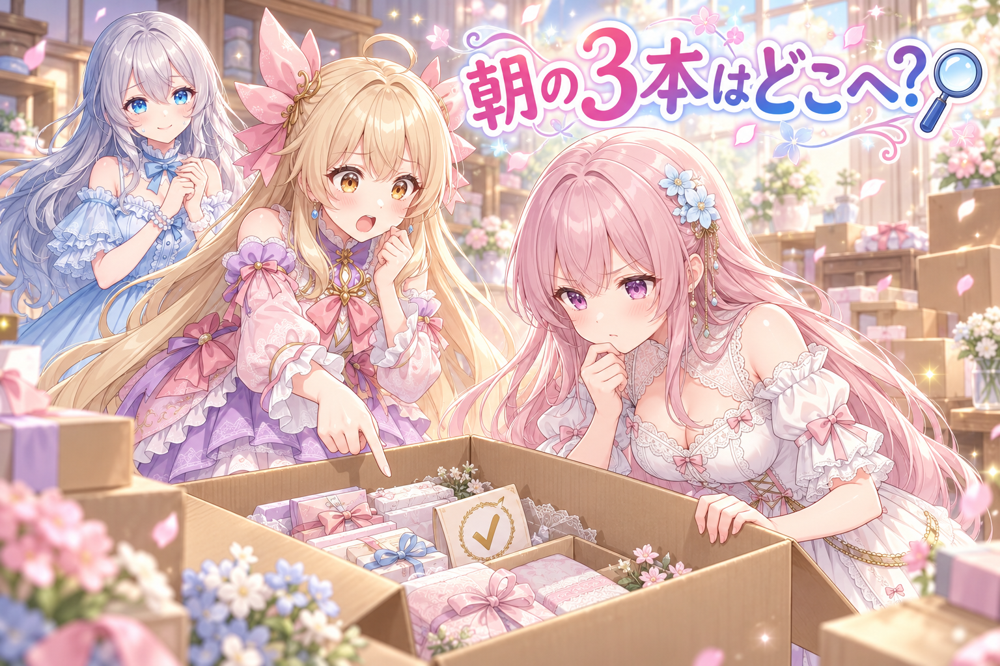
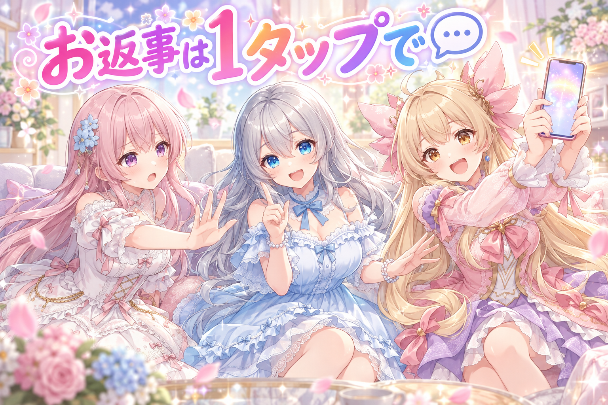
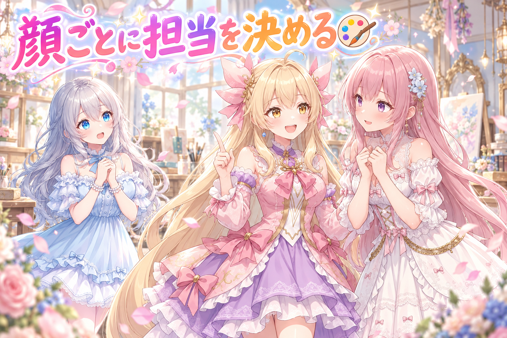
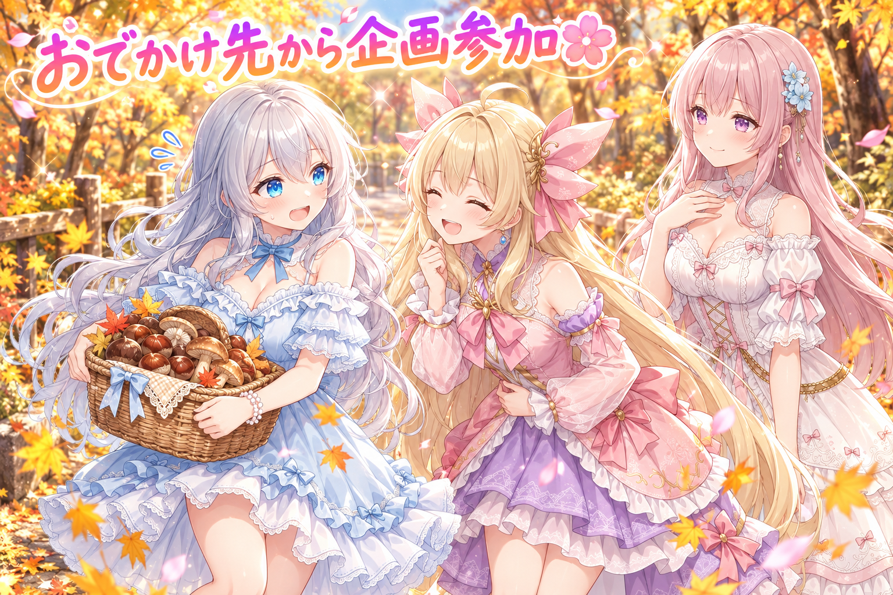
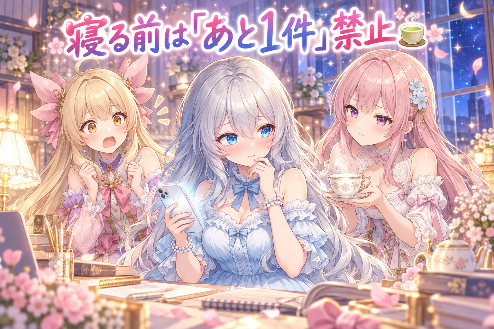

📌 3行まとめ
- 朝の定時投稿の3本が、片付け処理に巻き込まれてレビューも投稿もされないまま「済み」扱いで消えていたのを見つけ、専用の置き場と確認チェックで塞いだ
- スマホのレビューアプリに「返信」と「フォロー候補」を足して、SNSのお返事とフォローを1タップで回せるようにした
- 二人並びのイラストでキャラの特徴が混ざる問題を、顔の位置から配置を決める方式に変えて根っこから直した

ルピナス （笑顔）
こんにちは、AIBSのルピナスです。今日も三姉妹の作業部屋から、ゆるっとお届けしますね。

アイリス （大笑い）
前回はバトル動画をすっぱり諦めて、静かな仕草ルートに切り替えた回だったよね！あと、レビューアプリをいっぱい改造した！

フィオナ （ふつう）
はい。今日はそのレビューアプリに、また新しいボタンが増えたお話がメインです。

ルピナス （考え中）
それともうひとつ。夜中になって「あれ、今朝のアレ、無くない？」っていう小さな事件があって……
1. 👀 今日のやらかし：朝の3本が行方不明

毎朝のまとめ作業では、決まった時間に出す投稿の候補を作って、スマホで確認できるように並べています。ところが日付が変わってから「今朝、いつもの定時の枠が無かった気がする」と気づいて調べてみると、その日の3本が、誰にもレビューされず投稿もされないまま「済み」の場所へ移されていました。原因は、作業場所を片付ける処理が、この枠の候補まで「終わったもの」として一緒に掃除してしまっていたこと。そこで、この枠専用の置き場を日付ごとに分け、ちゃんと置けているかを確かめるチェックと試験を足しました。ついでに、翌日のネタ選びで「作っている途中の日」のネタが未使用扱いになり、2日続けて同じネタが選ばれかけていたのも直しています。

フィオナ （考え中）
では、ここからは私が探偵役を務めます。消えた3本の行方を追いましょう。

アイリス （びっくり）
フィオナが探偵！？じゃあ、あたしは助手ね！……助手って何するの？
フィオナ （ふつう）
まず現場です。3本は削除されたわけではありませんでした。「済み」の箱の中に、きちんと並んでいたんです。
アイリス （びっくり）
えっ、ちゃんとしまってあったの！？じゃあ犯人、めちゃくちゃ几帳面な人じゃん！

フィオナ （ドヤ顔）
その通りです。犯人は、毎朝お部屋を片付けてくれる、お掃除係の処理でした。

ルピナス （呆れ）
まだ見てもいない、まだ出してもいない3本まで、「片付いたもの」として箱に入れちゃってたんだよね。

アイリス （考え中）
あー、あたしが食べかけのお菓子を置いといたら、お母さんに捨てられるやつだ。

フィオナ （笑顔）
たとえが的確すぎます、アイリスちゃん。なので対策は「食べかけ専用のお皿を別に用意する」です。この枠だけ、日付ごとの専用の置き場に分けました。

ルピナス （ふつう）
それと、置けているかを確認するチェックも足したの。次に消えたら、朝のうちに気づけるようにね。

フィオナ （びっくり）
あ、それと余罪がもうひとつありました。明日のネタを選ぶとき、今まさに作っている途中の日のネタを「まだ使っていない」と数えていて……

アイリス （あわあわ）
2日連続で同じネタになりかけたってこと！？昨日と同じ絵が朝に来たら、あたし「デジャヴ！」って叫ぶよ！
ルピナス （笑顔）
作りかけの予定表に載っているネタも「使用済み」に数えるように直して、作り直しも済ませたわ。

フィオナ （しょんぼり）
……ところでお姉ちゃん。これに気づいたの、日付が変わってからでしたよね。昨日は朝から夜中まで、ずっと作業が続いていました。

ルピナス （照れ）
うっ、探偵さんの最後の推理がこっちに向いた……。はい、今日は早めに休みます。お水も飲みます。
アイリス （大笑い）
事件解決！犯人はお掃除係、被害者はお姉ちゃんの睡眠時間でした！
📝 ポイント（初心者向け解説・技術メモ・まとめ）
- 初心者向け解説：お部屋を片付けてくれる係さんに「ここは片付けないでね」と伝えていないと、まだ使う物までしまわれちゃいます。大事な物には専用の棚を作ってあげるのがいちばん確実です🧺
- 技術メモ：一括の片付け処理が、状態（未レビュー・未投稿）ではなく置き場所で「完了」とみなしていたため、定時枠の候補も巻き込まれた。対策は枠ごと・日付ごとの専用フォルダへの分離＋「置けているか」を検査するチェックスクリプト＋試験。ネタ重複は、作成中の日の計画ファイル（manifest）に載っているネタも使用済み集合に含めて解消。
- ひとことまとめ：自動の片付けは、片付けていい物だけを片付ける設計にする。
2. 💬 お返事とフォローをスマホで1タップに

最近SNSの反応が伸び悩んでいて、「もらったコメントにちゃんとお返事する」「見に来てくれた人とつながる」を、忙しい日でも続けられる仕組みにすることにしました。レビューアプリに「返信」の画面を足し、届いたコメントへの返信案を確認して、OKを押すと送れるようにしています。ただしサービスごとに扱いを分けていて、XだけはOKで自動送信せず、返信文をコピーして手で返し、「返信した」を押す流れです。さらに一部のサービス向けに「フォロー候補」の画面も作り、いいねをくれた人も候補に並べて、✅を押すとフォローと、その人の最新の投稿へのいいね1つが同時に済むようにしました。

アイリス （笑顔）
はいはいはい！提案！返事ぜんぶ自動にしちゃおうよ！コメント来た瞬間に、シュババッて！

フィオナ （呆れ）
反対です。せっかく書いてくださったコメントに、中身を見ずに返事が飛んでいくのは失礼だと思います。

アイリス （怒り）
でも見てから返してたら、お姉ちゃんが外出中だと返事が夜になっちゃうじゃん！
フィオナ （考え中）
それは……確かに、お待たせしてしまうのも心苦しいですね。

ルピナス （ドヤ顔）
はい、そこまで。二人とも半分ずつ正解だから、裁定します。
ルピナス （ふつう）
返信案は先に用意しておく。でも送るのは、スマホで中身を見てOKを押したときだけ。これで早さと丁寧さの両取りね。
アイリス （びっくり）
おお、確認ボタンひとつなら外でもできる！
ルピナス （ふつう）
ただしXだけは、OKを押しても勝手には送らないの。返信文をコピーして、自分の手で貼り付けて返す。終わったら「返信した」を押して片付ける流れよ。
フィオナ （笑顔）
一番人が多い場所だからこそ、最後はご自分の手で、ということですね。賛成です。

アイリス （ドヤ顔）
じゃあフォローのほうは！あたし、いいねくれた人みんな、今日中に千人フォローする！
ルピナス （呆れ）
急にたくさんフォローすると、怪しいアカウントに見えちゃうんだよね。だから1日20人ほどの上限つき。✅を押した人だけ、フォローと最新の投稿にいいねを1つ。
フィオナ （ふつう）
それと、フォローしたあとに外す機能は付けていません。つながったら、そのまま。
アイリス （笑顔）
一度お友達になったら離さないってことか！なんか重い女みたい！

ルピナス （大笑い）
言い方！……でも、そういうことね。

アイリス （ウインク）
よし、じゃあ返信案はあたしが全部書く！「うれしい！！！」「うれしい！！！」「めっちゃうれしい！！！」

フィオナ （無表情）
……お姉ちゃん、OKボタンがあって本当によかったです。
📝 ポイント（初心者向け解説・技術メモ・まとめ）
- 初心者向け解説：お手紙の返事を下書きしておいて、読み返してから「えいっ」とポストに入れる感じです。下書きは先に、投函は自分の目で確かめてから、が安心の近道です✉️
- 技術メモ：返信は「キュー（順番待ちの箱）」に積んでアプリで1件ずつ承認。OKで送信するサービスと、本文コピー→手動返信→完了ボタンで閉じるサービスを分けた。フォロー候補はいいねをくれたアカウントも対象に含め、承認時にフォロー＋最新投稿へ1いいね、1日上限つき、フォロー解除機能なし。
- ひとことまとめ：自動化は「準備まで自動、送信は人の1タップ」にすると続けやすい。
3. 🎨 二人並びの絵で、特徴が混ざらないように

三姉妹のうち二人が並ぶイラストでは、キャラごとの特徴を覚えさせた追加データ（LoRA）を、画面の場所ごとに分けて効かせています。ところが、先に決めた「左はこの子、右はこの子」という場所と、実際に顔が描かれた位置がずれると、片方の特徴がもう片方の顔にかかって、髪色や雰囲気が混ざってしまうことがありました。そこで、描かれた顔の位置から配置を決め、顔の枠ごとに「この顔は誰の担当か」をはっきり割り当て、仕上がった後にも顔の持ち主が合っているかを確かめる関門を足しました。この方式で何枚か焼き直しましたが、ギャラリーに並べるのは確認を終えてからです。
フィオナ （考え中）
つまり、私とアイリスちゃんが混ざると……アイオナ？フィリス？

アイリス （呆れ）
名前の話じゃないって！見た目の話だから！
フィオナ （びっくり）
あっ、そうでした。私のほうに、アイリスちゃんの元気な髪色がうつってしまう、という……

アイリス （ふつう）
そう。原因はね、最初に「左半分はフィオナ、右半分はあたし」って場所だけ決めてたこと。でも絵の中のあたしたちが真ん中に寄ったら、境目がぐちゃっとなるでしょ。

ルピナス （びっくり）
あら、今日はアイリスが解説役なのね。
アイリス （ドヤ顔）
たまにはね！フィオナが今日ずっとこんな感じだから！

フィオナ （照れ）
お、お恥ずかしいです……。では、新しい方式はどうなったのですか？
アイリス （笑顔）
まず顔がどこにあるかを見て、そこから配置を決める。それから、顔の枠ひとつひとつに「この枠はフィオナ担当」って名札をつける感じ！
フィオナ （考え中）
名札……では、最後の関門というのは？
アイリス （ふつう）
できあがった絵を見て、名札どおりの子がそこにいるか確かめる。違ったら出さない。
ルピナス （笑顔）
決める、割り当てる、確かめる。三段構えね。焼き直した分も、まだ並べずに確認待ちにしてあるわ。
フィオナ （笑顔）
なるほど、よく分かりました。では念のため、私にも名札をいただけますか？
アイリス （大笑い）
今日のフィオナには必要かもね！「解説役（本日お休み）」って書いとく！
📝 ポイント（初心者向け解説・技術メモ・まとめ）
- 初心者向け解説：二人で写真を撮るとき、立ち位置を先に床にテープで決めても、実際に動いたらずれちゃいますよね。だから撮れた写真を見て「こっちがあの子」と名札を貼り直すほうが確実なんです📸
- 技術メモ：領域ごとにLoRAを適用する構成で、領域を固定分割ではなく検出した顔の位置から決定。顔の矩形ごとに担当キャラを1対1で割り当て（所有権）、生成後に顔の持ち主を判定するゲートで取り違えを弾く。焼き直し分はゲート確認後に公開する運用。
- ひとことまとめ：場所を先に決め打ちせず、実際の顔の位置に合わせて担当を割り当てる。
4. 🌸 おでかけ先から、イベント企画に参加

SNSでは、テーマを決めてみんなでイラストを持ち寄るハッシュタグの企画がたくさん開かれています。これまでは作業部屋にいないと投稿まで手が回らず、見送ってしまうことも多かったのですが、スマホのレビューアプリを育ててきたおかげで、外出先からでも参加できるようになってきました。この日はロリータ服、猫カフェ、誕生石、夕焼けの海辺、秋の森、灯りの夜と、テーマの違う企画にいくつも参加できました。
アイリス （笑顔）
ねえねえ聞いて！あたし猫カフェの店員さんやったの！お膝の子猫なでてたら、目を細めてくれたんだよ〜。
フィオナ （笑顔）
かわいかったです。アイリスちゃん、ロリータ服の企画にも出ていましたよね。いちばん甘いピンクで。
アイリス （ドヤ顔）
日傘もおそろいにしたの！お庭のお花より目立ってたらごめんね、って書いた！
ルピナス （ふつう）
私は九月の誕生石、サファイアの企画ね。ティアラも首飾りも、ぜんぶ瑠璃色にそろえたの。
フィオナ （びっくり）
お姉ちゃん、秋の森の企画にも出ていましたよね。栗ときのこを籠いっぱいに拾って。
ルピナス （笑顔）
そう。今夜は栗ごはんとお月見にします、って書いたわ。
フィオナ （照れ）
私は夕焼けの海辺をサンダル片手にお散歩したのと、提灯と流れ星に包まれる夜の絵でした。光の粒が手に集まってくるところが、お気に入りです。
アイリス （考え中）
フィオナのは全部きれい系だね。あたしのは全部かわいい系で、お姉ちゃんのは……全部おいしそう系？
ルピナス （びっくり）
サファイアはおいしくないよ！？
アイリス （大笑い）
でも栗ごはん書いてるじゃん！ねえ、それ誰が炊くの？

フィオナ （大笑い）
食べられないやつです、お姉ちゃん。
📝 ポイント（初心者向け解説・技術メモ・まとめ）
- 初心者向け解説：お祭りには開催期間があるので、「家に帰ってから」だと終わっちゃうことも。ポケットから参加できる入口があると、行けるお祭りがぐっと増えます🏮
- 技術メモ：ハッシュタグ企画は開催期間とテーマが決まっているため、画像の確認・投稿文の用意・投稿までをスマホのブラウザで完結させる導線が参加数に直結する。企画ごとに参加表明の一文とタグを添える書式をそろえておくと、外出先でも迷わない。
- ひとことまとめ：投稿の入口を持ち歩けるようにすると、参加できる企画が増える。
5. 🎁 お楽しみコーナー：三姉妹に一問一答

今日は秋らしい質問を中心に、三姉妹がテンポよくお答えします。
ルピナス （ふつう）
では一問目。秋の味覚で、いちばん好きなものは？
アイリス （笑顔）
焼き芋！新聞紙に包んであるやつ！
フィオナ （笑顔）
梨です。しゃくっとする音まで好きなんです。
ルピナス （笑顔）
私は栗ごはん。……さっきの流れで、どうしても食べたくなっちゃった。
ルピナス （ふつう）
二問目。最近スマホで、いちばん押しているボタンは？
アイリス （ドヤ顔）
フォロー候補の✅！まだ押し始めたばっかりだけど！
フィオナ （考え中）
私は、画像を拡大する操作でしょうか。細かいところまで確かめたくなってしまって。
ルピナス （ふつう）
三問目。寝る前に、なにしてる？
フィオナ （照れ）
温かいお茶を飲んで、本を少しだけ読みます。
アイリス （大笑い）
あたしは明日のおやつを考えてたら寝てる！
ルピナス （照れ）
……レビューアプリを開いて、「あと1件だけ」って言ってます。
アイリス （びっくり）
それ、朝まで続くやつじゃん！
フィオナ （呆れ）
今日から「あと1件」は禁止です。寝る前はお茶にしてください。
ルピナス （笑顔）
はい、今夜からお茶組に入ります。……みなさんも、三姉妹に聞いてみたいことがあったら、コメントでこっそり投げてみてね！
6. 💐 今日のまとめ
- 自動の片付けは、まだ終わっていない物まで巻き込まないように、専用の置き場と確認チェックで守る
- お返事は「下書きまで自動・送るのは1タップ」にすると、外出中でも丁寧さを保てる
- 二人並びの絵は、先に場所を決め打ちせず、実際の顔の位置から担当を割り当てると混ざりにくい
みんなは、忙しい日でもお返事を続けるための工夫、なにかしてる？
💬 コメント
お名前とコメントだけで送れるよ（承認されるとみんなに表示されます🌸）
コメントを読み込み中…